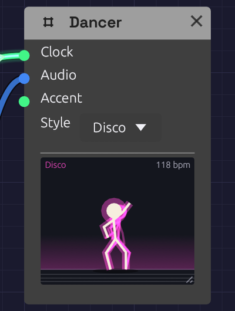

Dancer
Module ID util.dancer · Category Utility

Mid-step in the Disco style, the floor still lit from the beat.The Dancer is a stick figure who dances to your patch. It doesn't make a sound or change one; it's there for fun, and for company while you play. Drop one into any patch with a Clock and press play: it's already dancing on the beat. Patch the mix into it and it dances harder as the music gets louder. With no Clock at all, it listens for the beat in the mix, so it dances to a live band through Audio Input too.
Inputs
| Port | Signal Type | Description |
|---|---|---|
| Clock | Gate (Green) | Each pulse is a step. Leave it empty and the Dancer follows the patch's Clock |
| Audio | Audio (Blue) | The music to dance to: the louder it plays, the bigger the moves. A sudden hit, such as a kick, dips the hips. With no Clock, the Dancer finds the beat here |
| Accent | Gate (Green) | A rising edge asks for a big move: a jump, a spin, or arms flung up |
Every input is optional.
Parameters
| Control | Range | Default | Description |
|---|---|---|---|
| Style | Bounce / Disco / Robot / Headbang | Bounce | How the Dancer dances |
Drag the grip in the stage's bottom-right corner to make the stage bigger, up to three times its first size. Double-click the grip to put it back. The size is saved with the patch and can be undone like any other change.
How it works
The beat. Without a cable in Clock, the Dancer follows the patch's tempo and beat, the same ones a tempo-synced Delay follows. A cable in Clock takes over once two pulses have come in, so the Dancer can follow a different clock from the rest of the patch, such as a Clock Divider. If the clock stops, the Dancer stops dancing.
By ear. With no cable in Clock and no Clock running in the patch, the Dancer listens for the beat in Audio. It hears where the hits are, much as a Sampler sliced by onsets does, works out how often they repeat, and slides a comb of beats along them until its teeth catch the most hits. It needs about two seconds of steady hitting to be sure, and the header reads listening until then. The figure shows it's listening too: it leans toward the music with a hand cupped to its ear and its head cocked. As it grows surer, a foot starts tapping along to the hits, and when it hears the beat the hand comes down into the first move. While it dances by ear the header shows the tempo with a tilde, such as ~124 bpm. It stops when the music stops hitting for a couple of seconds, or when nothing in it repeats: a drone, a pad, or hits at random.
Its ear is good, not perfect. A kick on the beat is the easiest thing to hear, so it listens hardest to the low end. A broken beat can hit harder on the and than on the beat, so it also listens for a snare or a clap on two and four. Wherever that lands is the beat, and once it has heard a few bars of it, the Dancer turns to dance there. When a breakdown drops the drums, it keeps dancing at the pace it was, for up to eight bars, and when the drums come back it carries on where it was, on the beat rather than the and. A tresillo or a dotted-quarter figure playing across a beat it has danced for a while won't pull it off that beat. But one it hears from the start can be danced at two-thirds of the tempo, since that's the rhythm the music is playing. Where two rhythms run at once, as three against four does in Interlock, it keeps to the beat it found, and changes only when the other has led for a few seconds. A Clock in the patch, or a cable in Clock, always comes first.
Dancing tempo. People dance at roughly 75 to 150 steps a minute, whatever the music's tempo, and so does the Dancer. It doubles or halves the beat until each step falls in that range. A sixteenth-note clock at 120 BPM is danced on the quarter notes, and a 60 BPM ballad is danced double time. The header shows the tempo it's dancing at. During a ritardando it keeps its pace and slows with the music, rather than jumping to double time partway through.
Energy. Audio sets how big the moves are. Quiet music gets a gentle sway and loud music gets deep knee bends and wide arms. A sudden jump in level, such as a drum hit, dips the hips on the hit. With nothing in Audio, the Dancer dances at a steady, medium energy.
Steps. Each style has four steps, and the Dancer changes step every four bars. It begins with the style's first step, then picks a different one each phrase. The routine is the same every time the patch plays, so a recording looks the same on each take.
| Style | Steps |
|---|---|
| Bounce | Bob, side step and clap, running man, jumping jacks |
| Disco | The point (up and out, down and across), hip sway, the roll, the bump |
| Robot | Tutting, head ticks, an arm wave, a jerky slide. Moves snap into place every half beat |
| Headbang | Whip, air guitar, fist pump, stomp |
Accents. Each rising edge at Accent starts a big move that lasts one dancing beat. The moves take turns: a jump, arms flung up, and a spin. The order depends on the style.
Between songs. While the transport is stopped, or if the patch has no beat it can follow or hear, the Dancer stands around: it breathes, shifts its weight, taps a foot now and then, and looks around. If music without a beat is playing (a drone, a pad), it sways to it.
The stage
- The floor flashes in the style's color on each beat, brighter when the music is louder.
- The shadow spreads when the Dancer lands, and shrinks and fades while it's in the air.
- A faint trail shows where the limbs were a moment ago.
Patches
On the mix
Put a Dancer at the end of any patch:
[Tape Out L] ──> [Dancer Audio]
It dances on the patch's Clock, as big as the mix is loud.
To a live band
With no Clock in the patch, the Dancer finds the beat in whatever comes in:
[Audio Input L] ──> [Dancer Audio]
Play a record into it, or a drummer, and give it a couple of seconds.
A big move each phrase
The Clock Divider's Trig fires once a phrase. Patched into Accent, it makes the Dancer jump or spin as each new section starts:
[Clock Gate] ──> [Clock Divider Clock] (Divide 64: four bars of sixteenths)
[Clock Divider Trig] ──> [Dancer Accent]
A dance floor
Several Dancers in different styles, all on the same mix, dance in time with each other. Each one's routine depends on its style, so no two styles dance the same steps.
Related modules
- Clock: sets the beat the Dancer follows
- Clock Divider: a phrase-long trigger for Accent
- Oscilloscope: the other module that only watches